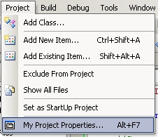
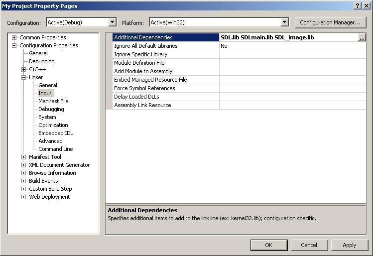

Setting up SDL Extension Libraries in Visual Studio.NET 2005/2008 Express
Last Updated 11/02/09
In this tutorial you're going to learn to set up SDL_image. If you know how to set up this extension, you can set any of them up.SDL_image is located on this page.
1)Scroll down to the Binary section and download the Windows development library

Every extension libary has 3 essential parts:
Open up the zip archive and there should be a folder inside.
Open the folder and it'll contain 2 subfolders.
2)First, open the include subfolder in the archive and you should see a header file. Put that header file in the directory with all the other header files in the SDL folder you extracted in lesson 1.
For example, I extracted the SDL version 1.2.12 folder to "C:\", so I put the SDL_image.h (or SDL_ttf.h or SDL_mixer.h) header in C:\SDL-1.2.12\include\.
3)Next extract the lib file that's inside of lib subfolder of the archive to your SDL lib folder. In my case it was at C:\SDL-1.2.12\lib\.
4)Now extract all of the *.dll file(s) from the archive and put them in the same directory as your exe.
Like before, you can copy them to C:\WINDOWS\SYSTEM32 (or C:\Windows\SysWOW64 on 64bit Windows) so your SDL app will find the *.dll(s) even if they're not in the same directory. The problem with this method is if you have multiple SDL apps that use different versions of SDL, you'll have version conflicts. If you have an old version in SYSTEM32 when the app uses the new version you're going to run into problems. Generally you want to have your the *.dll(s) in the same directory as your executable developing and you'll always want to have *.dll(s) in the same directory as the exe when distributing your app.
5)Now open up your SDL project and go to the project properties.
6)In the Linker menu under Input, paste:
If you were linking SDL_ttf you'd put
7)To use SDL_image make sure to include the header file.
Every extension libary has 3 essential parts:
- The header file.
- The lib file.
- The *.dll file(s)
Open up the zip archive and there should be a folder inside.
Open the folder and it'll contain 2 subfolders.
2)First, open the include subfolder in the archive and you should see a header file. Put that header file in the directory with all the other header files in the SDL folder you extracted in lesson 1.
For example, I extracted the SDL version 1.2.12 folder to "C:\", so I put the SDL_image.h (or SDL_ttf.h or SDL_mixer.h) header in C:\SDL-1.2.12\include\.
3)Next extract the lib file that's inside of lib subfolder of the archive to your SDL lib folder. In my case it was at C:\SDL-1.2.12\lib\.
4)Now extract all of the *.dll file(s) from the archive and put them in the same directory as your exe.
Like before, you can copy them to C:\WINDOWS\SYSTEM32 (or C:\Windows\SysWOW64 on 64bit Windows) so your SDL app will find the *.dll(s) even if they're not in the same directory. The problem with this method is if you have multiple SDL apps that use different versions of SDL, you'll have version conflicts. If you have an old version in SYSTEM32 when the app uses the new version you're going to run into problems. Generally you want to have your the *.dll(s) in the same directory as your executable developing and you'll always want to have *.dll(s) in the same directory as the exe when distributing your app.
5)Now open up your SDL project and go to the project properties.

6)In the Linker menu under Input, paste:
SDL_image.lib
in the additional dependencies field after "SDL.lib SDLmain.lib".

If you were linking SDL_ttf you'd put
SDL_ttf.lib
if you were linking SDL_mixer you'd putSDL_mixer.lib
etc, etc.7)To use SDL_image make sure to include the header file.
#include "SDL_image.h"
If you were setting up SDL_ttf you'd put
Now the extension library is all set up.
#include "SDL_ttf.h"
If you were setting up SDL_mixer you'd put#include "SDL_mixer.h"
etc, etc.Now the extension library is all set up.
Now you can use SDL_image functions.
The main one you want to know about is IMG_Load().
The main one you want to know about is IMG_Load().
SDL_Surface *load_image( std::string filename ) { //The image that's loaded SDL_Surface* loadedImage = NULL; //The optimized image that will be used SDL_Surface* optimizedImage = NULL; //Load the image using SDL_image loadedImage = IMG_Load( filename.c_str() ); //If the image loaded if( loadedImage != NULL ) { //Create an optimized image optimizedImage = SDL_DisplayFormat( loadedImage ); //Free the old image SDL_FreeSurface( loadedImage ); } //Return the optimized image return optimizedImage; }
Here is a revised version of the image loading function from the previous tutorial. As you can see IMG_Load() functions exactly the same as SDL_LoadBMP(), but there's one big exception: IMG_Load() can load BMP, PNM, XPM, LBM, PCX, GIF, JPEG, TGA and PNG files.
From this tutorial on, PNG image files will be the primary image format used. PNGs have excellent lossless compression.
From this tutorial on, PNG image files will be the primary image format used. PNGs have excellent lossless compression.